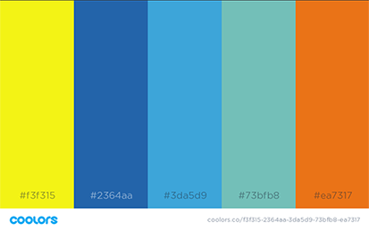

Southeast Idaho Weather Color Scheme
I chose the main colors of blue. According to WebSite Builder Expert, blue is the #1 preferred color by both men and women. Blue represents trust, security, stability, peace, and calmness. Used in business to create a sense of security and trust in the brand. People going to a weather site will want these qualities in the site.
